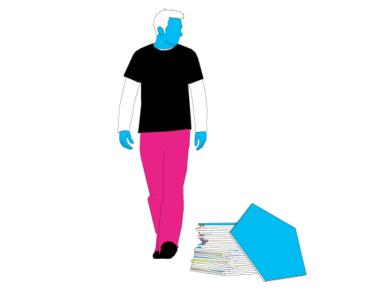
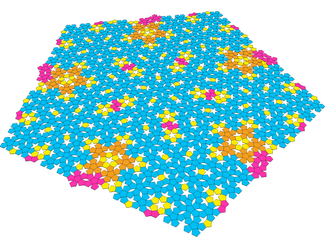

The Bathroom Problem
The study of the geometry of tilings requires the understanding of sophisticated mathematical concepts. However, tiles are shapes that people can play with, and even with a very limited understanding of the rules that put a complicated tiling together, an average person can do very well when having to cover a given area with an arbitrary set of tiles. The average person will perhaps approach the task not as a problem of science, but as a sort of craft, where expertise will come from experience, and understanding will be revealed not as theory, but as practice.
A construction worker might be used to work on bathrooms, pasting tiles to the walls. He would mostly deal with square tiles that can easily be put next to each other over a grid, but occasionally he would have to deal with slightly more complicated forms, like hexagonal tiles or square tiles with printed patterns on them, that would force him to arrange them in a constrained manner. In general, we might assume that he would never be forced to face a situation where the tiles given to him don't fit against each other, unless we maliciously offer him a box full of eccentric (maybe pentagonal) tiles to cover the walls of our bathroom. Not an expert in geometry, he might not notice that pentagonal tiles won't work until he has put a few of them together, and then, maybe concerned about getting his job done before dinner, he will not worry much about the gaps and keep working, taking care of arranging the gaps between tiles in a visually pleasant manner.
Inspired by this idea, we wanted to write a system that would deal with the problem of tiling the plane from the construction worker's approach, instead of solving it from the traditional mathematical perspective. Instead of looking at the symmetry properties of the plane as a whole, we wanted to figure out ways of making decisions by understanding very local and minimal information around the boundary of the last tile we placed, keeping track of whether it fits or how much it didn't entirely fit. We were interested in writing a system what would deal more with commonsense notions of composition and harmony, searching for potential ways of covering the walls of our bathroom with a variety of shapes.

